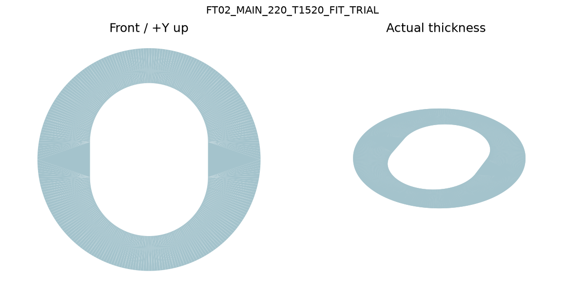
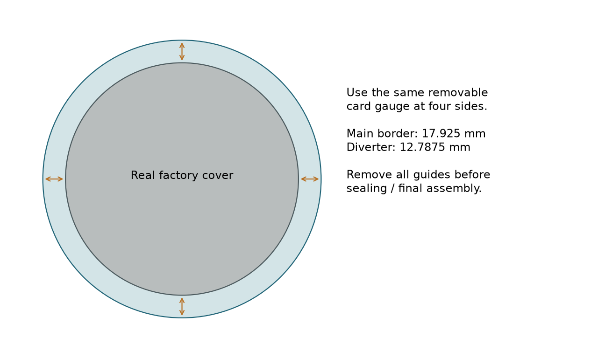

FT02 project home
INSTALLATION GUIDE
Fit-trial release | Physical and permanent checks remain open
1. Receive and protect the parts
Owner + installer | Tools: printed drawing, straightedge, caliper, nonmarring gloves and surface protection.

Inspect incoming parts
Confirm FT02 MAIN220 and DIV124/80, one each. Ponoko #4 metal is1.52 mm nominal,0.004 mm below the earlier1.524 engineering nominal. Clear is1.50. Inspect actual thickness, profile, flatness, safe edges and face. Catalog stock ranges: #4 steel1.44-1.64; acrylic1.27-1.73. Requested flatness0.5 mm is not supplier-guaranteed. No3 mm substitute.
Use paper for XY only
Print the Letter tiles at 100% and measure BOTH scale bars before trimming. Align the overlap crosses. The blue cutting profile is separate from the dashed cover/gasket overlay. Paper confirms outline/coverage; it does not establish stack depth, stiffness or water performance.
Completion check
Parts match the selected route and no sharp edge can scratch the stone or gasket. Preserve film during handling, but remove film from final contact/seal areas before evaluating the actual stack. Do not force a warped plate flat with factory nuts.
2. Fit factory parts and center the backing
Kohler installer | Tools: proper factory components and tools, nonmarring paper/card border guide, removable tape.

Make access
Remove handles, decorative cover and foam-backed inner plate as required. Retract/remove trim studs only if needed and restore correct engagement. Main backing passes over hardware through the single broad capsule; the knobs attach from the front through the FACTORY openings. They are not additional holes in the custom part.
Center without permanent tabs
Use the dashed factory-cover circle and outer circle on the 1:1 overlay, or cut the radial border gauge. Hold the actual cover in its intended location and compare the visible border at top/right/bottom/left. Main nominal border is 17.925 mm; diverter 12.7875 mm. Support with removable low-tack tape outside seal areas. Remove the guide from the FRONT; nothing remains under the gasket.
Trial complete stack
Include the actual backing thickness and required support stand-off. Verify all main foam lands on metal, inner plate seats, nuts remain under the cover, handles attach and turn freely, factory drain is down, and the diverter rear contact sits fully on the new ring. No cut or forced bend. If wrong, mark the interfering location rather than measuring the whole shower.
Completion check
Both circles remain concentric and separated; the assembly can be removed normally. Correct factory clamping on solid support must prevent shifting. Tape and sealant are not assumed permanent structural retention.
3. Provide solid support where it is needed
Installer + tile/stone specialist if required | Keep the original tile intact. Inspect through the existing rear opening.

Branch A - Sound contact
Dry-fit metal on clean sound stone. If the perimeter seal zone and factory clamp/gasket zones are adequately supported without bowing or rocking, no full-opening rebuild is required. Preserve that stable load path.
Branch B - Local missing support
Mark only unsupported bearing zones. Through rear access, provide securely supported cementitious backing on suitable framing/cleats without new tile penetrations. Fit sound stone or compatible cementitious infill to those zones, supported while curing and flush enough for the plate to sit without force. Keep repair and fasteners clear of pipes, valve mounting and service access. Do not use an adhesive dab as a freestanding support column.
Bonding option and limits
254 PLATINUM Plus is a candidate thin-set for compatible stone on cementitious backing; it is not cavity filler or waterproofing. Use the actual manufacturer sheet for substrate preparation, mixed bed thickness, support and water-exposure cure. LATAPOXY 310 may bond supported sound stone to compatible dry substrates, but porous/fissile material needs a suitability check. Neither product authorizes grinding the existing tile.
Concealed-waterproofing branch
If the rear reveals wet, crumbling material or a disrupted membrane, the specialist must identify and repair that system with a compatible detail before wet service. A surface bead or metal cover cannot demonstrate an unseen membrane connection. Record the selected repair, materials and cure; then repeat the same dry fit.
3A. Optional form-assisted local repair
Repair contractor | Use only after a support gap is found. REPAIR_FORM_SETUP gives the separate three-page procedure; the two plate files are unchanged.

Prepare and place
Confirm sound permanent backing and suitable substrate. Rehearse insertion and straight withdrawal of RF01 with actual hardware; preserve cartridge/tool access. Line it with removable PE, set three matched pads on sound tile, and brace it independently from the front. The full panel must seat without force or rocking.
Fill from the rear
Protect the valve. Hand-place only the required front12 mm repair zones outside the collar, supported by backing and outer shuttering. Do not fill the central service cavity or cast around pipes. Use the product-specific preparation/mix/cure; Cement All is conditional on compatible cementitious substrate, not presumed adhesion to travertine or board.
Remove all temporary pieces
After contractor-confirmed stripping strength, release the brace and pull toward the shower. Remove film, pads, protection and shuttering. No permanent plastic remains. Inspect support, voids and service clearance; repeat the same plate dry fit, then resolve sealing/waterproofing and cure before water tests.
4. Seal the new interface; keep drainage
Installer | Tools/materials: approved nonstaining stone-compatible sealant system, primer where required, mask and joint tooling.
Two separate seals
The original foam seals against the FRONT of the new backing. The new seal closes the OUTER backing-to-travertine perimeter on sound stone. Its path must lie outside all over-cuts. Keep the factory cover bottom notch open; it drains onto the front of the backing. Do not make an aligned gap in the new rear perimeter seal.
Candidate seal system
LATASIL with LATASIL 9118 primer is a researched candidate for porous stone and stainless, subject to a small adhesion/staining test. Remove contaminants and contact-surface protective film using methods compatible with the finishes. Follow the sealant joint design; its sheet specifies width 3-25 mm, depth at most 12 mm and roughly 2:1 width/depth. Use backer rod or bond-breaker tape where the joint needs it. Do not substitute an unqualified paper-thin smear or assume silicone supports the plate.
Finish and cure
Tool a continuous accessible perimeter joint, preserve service clearances, remove masking promptly and allow the complete selected system to cure. LATASIL generally needs 24 hours at 21 C before water, longer if conditions require; actual repair mortar/membrane may govern a longer interval. Record the product/lot, conditions and earliest permitted water test.
Completion check
The supported plate remains centered and stable, the entire foam band has contact, the new seal crosses no void, and the factory drain is visibly open. If the actual edge cannot accommodate a valid joint or sound substrate, resolve that detail before wet use.
5. Assemble, operate and test
Kohler installer | Use correct factory instructions for the actual revision. Maintain rear access for observation when practical.

Factory assembly
Fit correct adapters/screws, foam-backed inner plate and its nuts; install the decorative cover with drain down; secure handles through their factory hubs/bonnets or rings. Check full engagement and travel without scraping. Never drill the decorative cover for protruding nuts. Added depth is actual sheet plus bedding/support, not a generic 5 mm allowance.
Separate plumbing check
With correct hardware installed, test operation and temperature-limit setting per Kohler. Observe rear piping and valve for leakage while running water without wetting the trim exterior. Pressure-system work belongs to the plumber. A leak here is not repaired by the new escutcheon.
Separate external-water check
After all required cure, apply controlled normal shower spray to the assembled trim while observing accessible rear surfaces. Confirm drainage and no new moisture around the opening. Stop, dry and identify the route if water enters. Do not interpret one local test as certification of concealed shower waterproofing.
Completion check
Record FT02, material and actual thickness, adapter choice, stud remedy, support/seal system, cure completion, handle/drain results and the two water-test outcomes. Until passed, keep the part labeled fit trial.
6. Service, maintain and report a failed trial
Owner + installer | Retain the drawings and the actual installed revision with the factory instructions.

Future removal
Remove handles and cover using the factory sequence. The custom backing normally remains while the inner assembly is serviced. If backing removal is needed, carefully release its accessible outer seal without cutting the tile or disturbing hidden repairs. Recreate the seal and repeat the relevant cure/test steps. Do not permanently bond serviceable factory parts into the opening.
Routine care
Use finish-compatible, neutral-pH cleaning. Check for a loose plate, open perimeter joint, blocked factory drain or moisture. Do not caulk the factory drain closed. Repair damaged sealing after identifying the cause.
If something does not fit
Mark which part contacts what, and capture one focused photograph plus the failed action (cannot slide on / cannot seat / cannot attach / cannot turn / loses gasket contact). This is enough to separate an ordinary factory adjustment from a necessary CAD change. No new broad survey or 75-field form is required.
Status boundaries
Valid exports mean coherent geometry. Private quotes were obtained; no purchase or physical check has occurred. Actual received parts must establish fit, support, sealing, cure and water performance before permanent use.